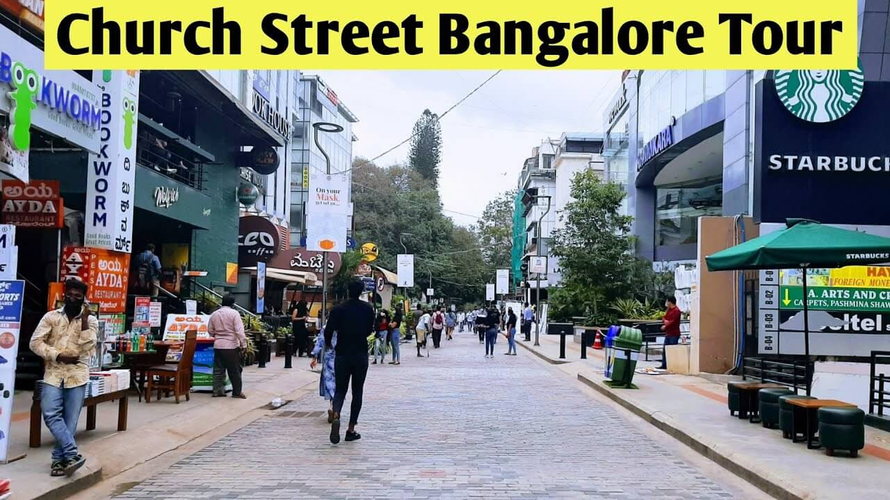
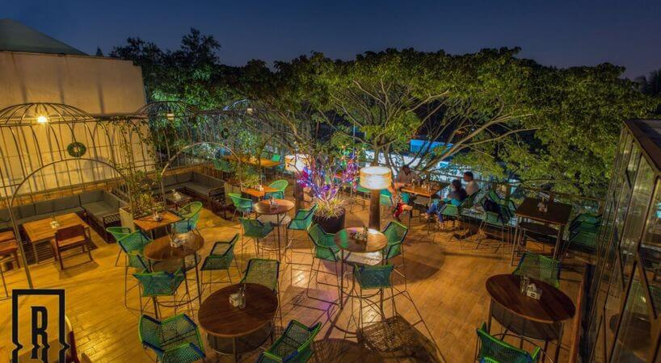

Heritage & Culture
Temple Site

Historic Palace
Ancient Ruins

Heritage Building
City Heritage
Popular in Bengaluru

Kadlekai Parshe

Church Street

Koramangala

Lalbagh

Nandi hills
Become a local guide register here
Getting guides made easy
There are many local part-timers ready to guide you through heritage spots and local hidden gems.